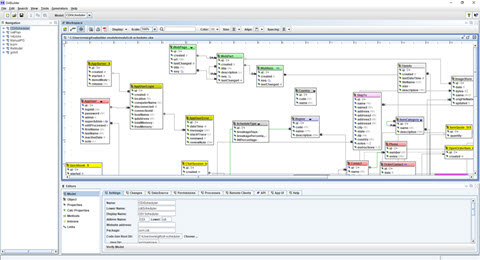

Models are the "blueprints" of software, that capture details that are used to automate software development.
Some history
OABuilder started out in 1999 as a tool to define object
and database models and has evolved into a tool that captures
the details about a software application, so that it can be used by custom tools for managing and generating the software represented by the model.
OABuilder, code generators, and the OA libraries have been used in numerous projects across many vertical markets. This includes large projects with thousands of users and millions of transactions per day.
OABuilder was created from expertise and experience from developing various software systems that include the following: software modeling, MDA, RDBMS modeling, distributed architectures, code parsers, forward and reverse engineering, compilers, programming languages, and libraries.